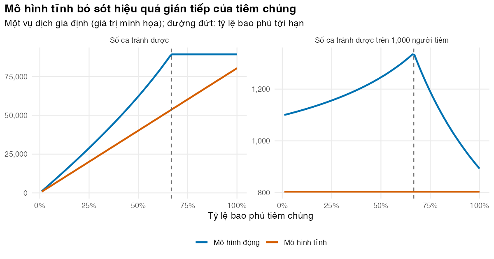

Hiểu lực lây nhiễm, R0, Re và vì sao hiệu quả gián tiếp làm thay đổi kết quả đánh giá kinh tế
Vì sao bạn nên quan tâm?
Một phụ huynh đứng trước bảng giá ở VNVC: hai liều Qdenga hết 2,580,000 VNĐ, bằng 11 ngày lương tối thiểu vùng I hay 64 bát phở (Hệ thống tiêm chủng VNVC 2026; Chính phủ 2025; Nhadautu.vn 2025). Năm 2023 cả nước báo cáo 172,000 ca sốt xuất huyết Dengue và 43 ca tử vong (VOV 2024). Nếu Bộ Y tế tính chuyện trả tiền cho mọi trẻ, câu hỏi không chỉ là con mình được bảo vệ bao nhiêu, mà còn là đứa trẻ hàng xóm chưa tiêm có được bảo vệ nhờ con mình hay không. Mô hình Markov ở M02 không trả lời được câu thứ hai. Bài này giúp bạn quyết định khi nào đánh giá kinh tế một vắc xin bắt buộc phải dùng mô hình lây truyền động.
Mục tiêu học tập
Sau bài này, bạn có thể:
Phân biệt mô hình tĩnh (static model) với mô hình lây truyền động (dynamic transmission model) và nói được khi nào cần mô hình động.
Tính lực lây nhiễm (force of infection), hệ số lây nhiễm cơ bản (R0) và hệ số lây nhiễm hiệu dụng (Re).
Tính ngưỡng miễn dịch cộng đồng (herd immunity threshold) và tỷ lệ bao phủ tiêm chủng tới hạn (critical vaccination coverage) khi vắc xin không hoàn hảo.
Dùng phương trình kích thước cuối (final size equation) của vụ dịch để so sánh số ca tránh được theo hai loại mô hình.
Ý chính
Mô hình tĩnh coi nguy cơ nhiễm của mỗi người là một đầu vào cố định. Mô hình động tính nguy cơ đó từ số người đang lây nhiễm, nên nó thay đổi khi can thiệp làm giảm lây truyền.
Lực lây nhiễm \(\lambda(t) = \beta I(t)/N\) là tỷ suất (rate) mà một người cảm nhiễm bị nhiễm. Đây là “cái van” nối dịch tễ với kinh tế.
\(R_e = R_0 \times s\), với \(s\) là tỷ lệ cảm nhiễm. Lây truyền giảm dần khi \(R_e < 1\), tức là khi tỷ lệ có miễn dịch vượt \(1 - 1/R_0\).
Với vắc xin có hiệu lực (efficacy) \(E\), tỷ lệ bao phủ tới hạn là \((1 - 1/R_0)/E\). Con số này có thể lớn hơn 100%, nghĩa là tiêm chủng đơn thuần không thể chặn lây truyền.
Mô hình tĩnh bỏ sót hiệu quả gián tiếp (indirect effect), nên thường đánh giá thấp số ca tránh được và đánh giá cao tỷ số chi phí-hiệu quả gia tăng (ICER) của chương trình tiêm chủng.
Số ca tránh được trên mỗi người tiêm không cố định trong mô hình động: nó phụ thuộc tỷ lệ bao phủ, và bằng 0 với người tiêm thêm khi đã vượt ngưỡng.
Nội dung
Tĩnh hay động: câu hỏi nằm ở lực lây nhiễm
Mô hình Markov ở M02 là mô hình tĩnh: xác suất một người bệnh lao kháng thuốc thất bại điều trị không phụ thuộc vào việc người khác có được điều trị hay không. Với phần lớn bệnh không lây, giả định này hợp lý. Với bệnh truyền nhiễm, nó thường sai. Khi một chương trình làm giảm số người đang lây nhiễm, nguy cơ nhiễm của mọi người, kể cả người không được can thiệp, cũng giảm theo.
Đại lượng mô tả nguy cơ đó là lực lây nhiễm:
\[
\lambda(t) = \beta \, \frac{I(t)}{N},
\]
trong đó \(\beta\) là hệ số lây truyền (transmission rate, gộp tần suất tiếp xúc và xác suất lây mỗi lần tiếp xúc), \(I(t)\) là số người đang lây nhiễm và \(N\) là quy mô quần thể. Một người cảm nhiễm có xác suất bị nhiễm trong khoảng thời gian \(t\) là \(1 - e^{-\lambda t}\) nếu \(\lambda\) không đổi, đúng công thức đổi tỷ suất sang xác suất ở M02.
flowchart LR V["Can thiệp<br/>(tiêm chủng)"] --> I["Số người đang<br/>lây nhiễm I(t)"] I --> L["Lực lây nhiễm<br/>λ(t) = β I(t)/N"] L --> S["Ca nhiễm mới<br/>λ(t) × S(t)"] S --> I L -.->|"mô hình tĩnh: λ cố định,<br/>vòng phản hồi bị cắt"| X["Chỉ tính<br/>hiệu quả trực tiếp"]
flowchart LR
V["Can thiệp<br/>(tiêm chủng)"] --> I["Số người đang<br/>lây nhiễm I(t)"]
I --> L["Lực lây nhiễm<br/>λ(t) = β I(t)/N"]
L --> S["Ca nhiễm mới<br/>λ(t) × S(t)"]
S --> I
L -.->|"mô hình tĩnh: λ cố định,<br/>vòng phản hồi bị cắt"| X["Chỉ tính<br/>hiệu quả trực tiếp"]
Sự khác biệt giữa hai loại mô hình nằm trọn ở vòng phản hồi trong sơ đồ. Mô hình tĩnh cắt vòng này: \(\lambda\) là tham số nhập từ ngoài. Mô hình động giữ vòng này: \(\lambda\) là kết quả của mô hình (Pitman và c.s. 2012; Jit và Brisson 2011). Một rà soát các phân tích chi phí-hiệu quả (CEA) về vắc xin cho thấy phần lớn nghiên cứu cũ dùng mô hình tĩnh (Kim và Goldie 2008).
R0, Re và ngưỡng miễn dịch cộng đồng
R0 là số ca nhiễm thứ phát trung bình do một ca nhiễm gây ra trong một quần thể hoàn toàn cảm nhiễm. Trong mô hình SIR đơn giản, \(R_0 = \beta / \gamma\), với \(1/\gamma\) là thời gian lây nhiễm. Ở bài này ta dùng một bệnh lây trực tiếp giả định với \(R_0 =\) 2.5 và thời gian lây nhiễm 5 ngày (giá trị minh họa).
Khi chỉ còn một tỷ lệ \(s\) người cảm nhiễm, mỗi ca chỉ gây được \(R_e = R_0 s\) ca mới. Lây truyền giảm khi \(R_e < 1\), tức là khi tỷ lệ có miễn dịch vượt ngưỡng miễn dịch cộng đồng\(1 - 1/R_0\)(Anderson và May 1985). Với vắc xin kiểu “tất cả hoặc không” (all-or-nothing) có hiệu lực \(E\), mỗi người tiêm chỉ được bảo vệ với xác suất \(E\), nên tỷ lệ bao phủ tới hạn là
\[
p_c = \frac{1 - 1/R_0}{E}.
\]
Cụm từ “miễn dịch cộng đồng” được dùng với nhiều nghĩa khác nhau: tỷ lệ người có miễn dịch, ngưỡng nói trên, hoặc chính hiện tượng người không tiêm được bảo vệ gián tiếp (Fine, Eames, và Heymann 2011). Trong khóa học này, miễn dịch cộng đồng chỉ hiện tượng, ngưỡng miễn dịch cộng đồng chỉ con số \(1 - 1/R_0\).
Vì sao hiệu quả gián tiếp làm đổi kết quả kinh tế
Cách đơn giản nhất để thấy khác biệt là xét một vụ dịch trong quần thể đóng. Tỷ lệ \(z\) người cảm nhiễm cuối cùng bị nhiễm thỏa phương trình kích thước cuối, có từ công trình của Kermack và McKendrick (Kermack và McKendrick 1927):
\[
z = 1 - e^{-R_0 z}.
\]
Nếu tiêm trước vụ dịch cho tỷ lệ \(c\) dân số, phần không được bảo vệ là \(1 - cE\). Mô hình tĩnh giữ nguyên tỷ lệ tấn công \(z_0\) cho những người này. Mô hình động tính lại tỷ lệ tấn công với \(R_e = R_0(1 - cE)\), vì vụ dịch nhỏ đi thì nguy cơ của từng người cũng nhỏ đi. Trong một vụ dịch ở quần thể đóng, khi vắc xin giảm nhiễm và đầu ra là số ca bệnh, mô hình lực lây nhiễm cố định đánh giá thấp hiệu quả của chương trình, trừ khi không tiêm ai hoặc tiêm tất cả bằng vắc xin hoàn hảo (Edmunds, Medley, và Nokes 1999). Với vắc xin không hoàn hảo, ngay cả khi tiêm 100% dân số mô hình tĩnh vẫn còn 8,926 ca, trong khi mô hình động còn 0 ca (xem bảng ở phần Thực hành). Số ca tránh được bị đánh giá thấp thì ICER bị đánh giá cao: bỏ qua hiệu quả gián tiếp làm sai lệch ước tính chi phí-hiệu quả của chương trình tiêm chủng (Brisson và Edmunds 2003).
Mô hình động không phải lúc nào cũng “lạc quan” hơn. Khi lây truyền giảm, người chưa tiêm bị nhiễm muộn hơn: đó là dịch chuyển tuổi mắc (age shift), và tỷ số chi phí-hiệu quả thay đổi theo thời gian chứ không cố định (Edmunds, Medley, và Nokes 1999). Sau một giai đoạn yên ắng (giai đoạn trăng mật, honeymoon period), người cảm nhiễm tích lũy trở lại và có thể có đợt dịch bật lại; Bài 3 và Bài 4 sẽ cho thấy hiện tượng này. Mô hình tĩnh không thể hiện được cả hai.
Thực hành
Phần này chạy code/l01-static-vs-dynamic.R. Chưa cần deSolve: mọi phép tính đều là công thức đóng.
Đoạn đầu đọc bảng tham số khởi động và tính \(\beta\) từ R0 và thời gian lây nhiễm. Kiểm tra: \(\beta \times\) thời gian lây nhiễm phải bằng R0.
# Vietnamese text in figures needs a UTF-8 locale (Rscript may start in the "C" locale)if (!isTRUE(l10n_info()[["UTF-8"]])) invisible(Sys.setlocale("LC_CTYPE", "en_US.UTF-8"))source("../_shared/R/helpers.R")source("code/model.R")library(ggplot2)pw <-read_params("params/warmup.csv")wi <-warmup_inputs(pw) # closed population: mu = 0c(R0 = wi$r0, beta_per_day = wi$beta_sir, infectious_days =1/ wi$gamma)
R0 beta_per_day infectious_days
2.5 0.5 5.0
Đoạn sau tính lực lây nhiễm ứng với ba mức tỷ lệ hiện mắc, rồi đổi sang nguy cơ bị nhiễm trong 30 ngày nếu lực lây nhiễm giữ nguyên. Kiểm tra: nguy cơ tăng khi tỷ lệ hiện mắc tăng, nhưng không tăng tuyến tính.
# Force of infection lambda = beta * I / N (per day) and the risk of infection over# 30 days for a susceptible person if lambda stayed constant: 1 - exp(-30 * lambda)prevalence <-c(0.001, 0.01, 0.05)foi <- wi$beta_sir * prevalencefoi_tab <-data.frame(prevalence = prevalence, foi_per_day = foi,risk_30d =rate_to_prob(foi, 30))round(foi_tab, 4)
# Eyeball check (true for any rate-to-probability conversion): more infectious people -> higher riskstopifnot(all(diff(foi_tab$risk_30d) >0))
Tiếp theo, tính \(R_e\) ở vài mức cảm nhiễm, ngưỡng miễn dịch cộng đồng và tỷ lệ bao phủ tới hạn với hiệu lực vắc xin minh họa 0.9. Hãy tìm hàng có \(R_e = 1\): tỷ lệ cảm nhiễm ở hàng đó đúng bằng \(1/R_0\).
# Effective reproduction number Re = R0 * s (s = susceptible share).# Transmission declines (Re < 1) once s < 1/R0, i.e. immune share > 1 - 1/R0.s <-c(1, 0.8, 0.6, 1/ wi$r0, 0.3)re_tab <-data.frame(susceptible_share = s, Re = wi$r0 * s)round(re_tab, 3)
Ngưỡng miễn dịch cộng đồng là 60.0%; với vắc xin hiệu lực 90%, cần tiêm ít nhất 66.7% dân số.
Hàm final_size() giải phương trình kích thước cuối bằng uniroot(). Kiểm tra: thay nghiệm trở lại phương trình phải cho sai số gần bằng 0, và tỷ lệ tấn công (attack rate) tăng theo R0.
# Final size of an epidemic: share of susceptibles ever infected, z = 1 - exp(-R0 z)z0 <-final_size(wi$r0)z0
Đoạn quan trọng nhất so sánh hai mô hình trên một lưới tỷ lệ bao phủ từ 0 đến 100%. Ba kiểm tra stopifnot() diễn đạt điều ta biết chắc: hai mô hình trùng nhau khi không tiêm (đúng theo cách xây dựng); mô hình động không bao giờ cho nhiều ca hơn mô hình tĩnh (kiểm tra final_size() thật sự, vì \(R_e\) nhỏ hơn phải cho tỷ lệ tấn công nhỏ hơn); vượt ngưỡng thì không còn vụ dịch. Bảng in hai hàng: bao phủ 30% và 100%.
# Vaccinate a share `cov` before the epidemic. Static model: attack rate among the# unprotected stays at z0. Dynamic model: attack rate recomputed with Re = R0 (1 - cov e).cov_grid <-seq(0, 1, by =0.01)vfs <-vaccination_final_size(wi$r0, cov_grid, pw$wu_eff, wi$n)vfs$averted_static <- vfs$cases_none - vfs$cases_staticvfs$averted_dynamic <- vfs$cases_none - vfs$cases_dynamic# Checks. (1) Same answer without vaccination: true by construction, a consistency print.# (2) The dynamic model never predicts more cases than the static one: this tests final_size(),# because a smaller Re must give a smaller attack rate. (3) No epidemic above the critical coverage.stopifnot(abs(vfs$cases_static[1] - vfs$cases_dynamic[1]) <1e-6,all(vfs$cases_dynamic <= vfs$cases_static +1e-6),all(vfs$cases_dynamic[cov_grid > crit_cov +1e-9] <1e-6))cov_show <- pw$wu_cov_showrow_show <- vfs[abs(vfs$coverage - cov_show) <1e-9, ]# Also show 100% coverage: an imperfect vaccine (efficacy < 1) still leaves unprotected peoplerow_full <- vfs[abs(vfs$coverage -1) <1e-9, ]rbind(round(row_show[, c("coverage", "cases_none", "cases_static", "cases_dynamic")], 2),round(row_full[, c("coverage", "cases_none", "cases_static", "cases_dynamic")], 2))
Ở tỷ lệ bao phủ 30%, mô hình tĩnh cho 24,101 ca tránh được, mô hình động cho 35,121 ca, gấp 1.46 lần. Phần chênh lệch chính là hiệu quả gián tiếp.
Hình dưới vẽ cả hai cách nhìn: tổng số ca tránh được và số ca tránh được trên 1,000 người tiêm.
# Two views: total cases averted, and cases averted per 1,000 people vaccinatedvac <- vfs[vfs$coverage >0, ]plot_df <-rbind(data.frame(coverage = vac$coverage, model ="Mô hình tĩnh",panel ="Số ca tránh được", value = vac$averted_static),data.frame(coverage = vac$coverage, model ="Mô hình động",panel ="Số ca tránh được", value = vac$averted_dynamic),data.frame(coverage = vac$coverage, model ="Mô hình tĩnh",panel ="Số ca tránh được trên 1,000 người tiêm",value =1000* vac$averted_static / (vac$coverage * wi$n)),data.frame(coverage = vac$coverage, model ="Mô hình động",panel ="Số ca tránh được trên 1,000 người tiêm",value =1000* vac$averted_dynamic / (vac$coverage * wi$n)))plot_df$panel <-factor(plot_df$panel, levels =c("Số ca tránh được","Số ca tránh được trên 1,000 người tiêm"))fig_sd <-ggplot(plot_df, aes(coverage, value, colour = model)) +geom_line(linewidth =1) +geom_vline(xintercept = crit_cov, linetype ="dashed", colour ="grey40") +facet_wrap(~panel, scales ="free_y") +scale_colour_manual(values =c("Mô hình động"= pal_course[1], "Mô hình tĩnh"= pal_course[2]),name =NULL) +scale_x_continuous(labels =function(x) paste0(100* x, "%")) +scale_y_continuous(labels =function(x) fmt_num(x)) +labs(x ="Tỷ lệ bao phủ tiêm chủng", y =NULL,title ="Mô hình tĩnh bỏ sót hiệu quả gián tiếp của tiêm chủng",subtitle ="Một vụ dịch giả định (giá trị minh họa); đường đứt: tỷ lệ bao phủ tới hạn") +theme_course()save_fig(fig_sd, "l01-static-dynamic.png", width =8, height =4.2)

Figure 28.1: Số ca tránh được theo tỷ lệ bao phủ: mô hình tĩnh tăng tuyến tính, mô hình động tăng nhanh rồi bão hòa ở tỷ lệ bao phủ tới hạn.
Panel bên phải của hình là điều nhà kinh tế cần nhất. Trong mô hình tĩnh, mỗi người tiêm “mua” được một lượng sức khỏe cố định, nên chi phí trên mỗi ca tránh được không đổi theo quy mô chương trình. Trong mô hình động, lợi ích trên mỗi người tiêm tăng dần đến ngưỡng rồi giảm, vì người tiêm thêm khi đã có miễn dịch cộng đồng gần như không tránh thêm được ca nào. Vì vậy ICER của việc mở rộng bao phủ có thể rất khác ICER trung bình.
Mẹo thực hành
Trước khi chọn loại mô hình, tự hỏi: can thiệp có làm thay đổi số người đang lây nhiễm không? Nếu có, và người không được can thiệp có thể hưởng lợi, hãy dùng mô hình động (Pitman và c.s. 2012).
Luôn báo cáo R0 và tỷ lệ bao phủ tới hạn cùng với kết quả kinh tế. Người đọc sẽ biết ngay chương trình nằm dưới hay trên ngưỡng.
Với vắc xin không hoàn hảo, tính lại \(p_c = (1 - 1/R_0)/E\). Nếu \(p_c > 1\), nói rõ rằng tiêm chủng đơn thuần không thể chặn lây truyền.
Lỗi thường gặp
Lấy lực lây nhiễm từ dữ liệu trước can thiệp rồi giữ cố định. Đó chính là mô hình tĩnh; với vắc xin, kết quả thường thiên về bất lợi cho chương trình.
Nhầm ngưỡng miễn dịch cộng đồng với tỷ lệ bao phủ cần đạt. Hai con số chỉ bằng nhau khi vắc xin hiệu lực 100% và bảo vệ suốt đời.
Nhân số ca tránh được trên mỗi người tiêm với số người tiêm ở một quy mô khác. Trong mô hình động, tỷ số này đổi theo tỷ lệ bao phủ; phải chạy lại mô hình ở từng quy mô.
Bài tập
(Dễ) Với R0 = 4, tính tỷ lệ bao phủ tới hạn khi vắc xin hoàn hảo và khi hiệu lực là 0.7. Kết luận gì về trường hợp thứ hai?
(Trung bình) Dùng kết quả mô hình động, tính số ca tránh được thêm khi tăng bao phủ từ 10% lên 20%, từ 40% lên 50% và từ 70% lên 80%. Giải thích vì sao bước cuối không tránh thêm được ca nào.
(Khó) Tìm tỷ lệ bao phủ cho số ca tránh được trên mỗi người tiêm lớn nhất trong mô hình động, và so với giá trị không đổi của mô hình tĩnh.
Lời giải
Bài 1. Với hiệu lực 0.7, tỷ lệ cần tiêm là 107%, vượt 100%: không thể chặn lây truyền chỉ bằng vắc xin này.
# Exercise 1: critical coverage for a higher R0 with a perfect vaccine and with efficacy 0.7r0_ex <- pw$wu_r0_exeff_ex <-attr(pw, "table")$low[attr(pw, "table")$name =="wu_eff"] # low bound of efficacyc(perfect =1-1/ r0_ex, imperfect = (1-1/ r0_ex) / eff_ex)
perfect imperfect
0.750000 1.071429
Bài 2. Số ca tránh được thêm tăng dần đến gần ngưỡng, rồi bằng 0 khi đã vượt 66.7%: không còn vụ dịch để ngăn.
# Exercise 2: extra cases averted (dynamic model) by raising coverage by 10 pointsgain <-function(from, to) { a <- vfs$averted_dynamic[abs(vfs$coverage - from) <1e-9] b <- vfs$averted_dynamic[abs(vfs$coverage - to) <1e-9] b - a}round(c(from_10_to_20 =gain(0.1, 0.2), from_40_to_50 =gain(0.4, 0.5),from_70_to_80 =gain(0.7, 0.8)))
Anderson, R. M., và R. M. May. 1985. “Vaccination and herd immunity to infectious diseases”. Nature 318 (6044): 323–29. https://doi.org/10.1038/318323a0.
Brisson, M., và W. J. Edmunds. 2003. “Economic evaluation of vaccination programs: the impact of herd-immunity”. Medical Decision Making 23 (1): 76–82. https://doi.org/10.1177/0272989X02239651.
Fine, Paul, Ken Eames, và David L. Heymann. 2011. “"Herd immunity": a rough guide”. Clinical Infectious Diseases 52 (7): 911–16. https://doi.org/10.1093/cid/cir007.
Hệ thống tiêm chủng VNVC. 2026. “Bảng giá tiêm chủng vắc xin tại VNVC tháng 9/2026”. 26 Tháng Chín 2026. https://vnvc.vn/bang-gia-vac-xin/.
Jit, Mark, và Marc Brisson. 2011. “Modelling the epidemiology of infectious diseases for decision analysis: a primer”. PharmacoEconomics 29 (5): 371–86. https://doi.org/10.2165/11539960-000000000-00000.
Kermack, William Ogilvy, và A. G. McKendrick. 1927. “A contribution to the mathematical theory of epidemics”. Proceedings of the Royal Society of London. Series A 115 (772): 700–721. https://doi.org/10.1098/rspa.1927.0118.
Kim, Sun-Young, và Sue J. Goldie. 2008. “Cost-effectiveness analyses of vaccination programmes: a focused review of modelling approaches”. PharmacoEconomics 26 (3): 191–215. https://doi.org/10.2165/00019053-200826030-00004.
Pitman, Richard, David Fisman, Gregory S. Zaric, Maarten Postma, Mirjam Kretzschmar, John Edmunds, và Marc Brisson. 2012. “Dynamic transmission modeling: a report of the ISPOR-SMDM Modeling Good Research Practices Task Force Working Group-5”. Medical Decision Making 32 (5): 712–21. https://doi.org/10.1177/0272989X12454578.